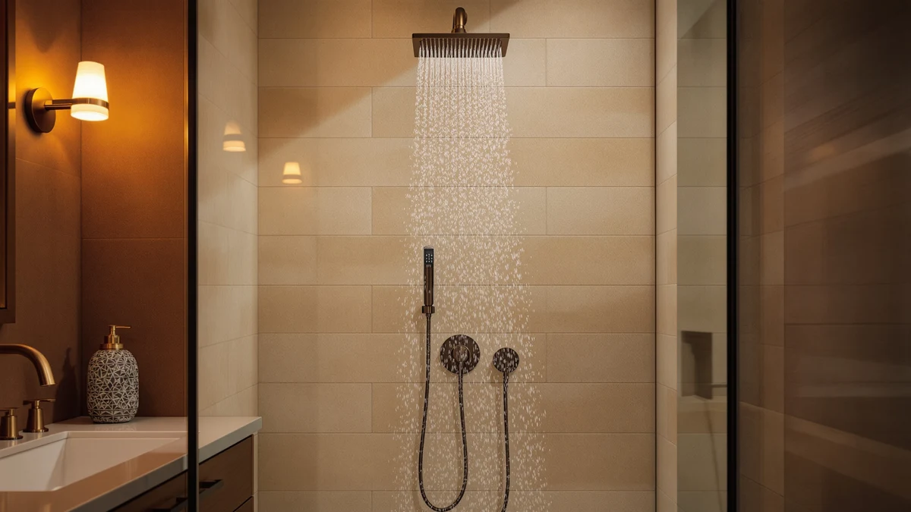

Heable Shower Faucet Set Review (2026): Worth It?
Prices and picks verified as of October 2026. Independent, reader-supported reviews.


Quick Answer
The Heable Shower Faucet Set Matte is our pick among the four shower faucet sets in this heable shower faucet set review, thanks to its 12-inch ceiling-mounted square head and chrome-plated ABS build. At $179.99 it costs more than the JingGang and Jolie alternatives but less than the SR SUN RISE set, and the ceiling-mount design suits bathrooms that can't accommodate a wall-mounted arm.
Our pick: Heable Shower Faucet Set Matte — $179.99 Check Price on Amazon
Bottom line: our top pick is the Heable Shower Faucet Set Matte Black 12 Inch Ceiling Mount at $179.99.
Things to Know Before You Buy
- Ceiling-mount heads like the one on the Heable shower faucet set change your spray angle compared with the wall-mounted arms on the SR SUN RISE and JingGang sets, so check your existing rough-in before you buy.
- All four shower faucet sets in this review use ABS plastic bodies with a plated finish rather than solid brass, which keeps the price down but makes finish durability worth watching over time.
- Price alone doesn't track with head size or features here. The $159.99 JingGang set includes a handheld sprayer that the pricier Heable and SR SUN RISE sets don't.
- None of the four products in our database carry a published rating or review count, so this comparison relies on specs, pricing, and verified owner feedback rather than an aggregate score.
- If filtration matters more to you than mount style, the Jolie Filtered Showerhead is the only one of the four built around water filtration rather than flow or finish.
This heable shower faucet set review compares the Matte ceiling-mount system against three other shower faucet sets, the Jolie Filtered Showerhead, the SR SUN RISE Shower Faucet, and the JingGang Brushed Gold Shower System, to help you decide which one fits your bathroom and your budget. At $179.99, the Heable set sits in the middle of this group, priced above the $159.99 JingGang and $169.00 Jolie but below the $199.99 SR SUN RISE, and that position shapes most of the comparison that follows.
What actually matters here is whether the mounting style and finish fit your bathroom, not how many features are bolted on. The Heable set mounts to the ceiling with a 12-inch square head, a layout that suits bathrooms built for a rain-style drop rather than a wall-mounted arm. Owners switching between ceiling and wall mounts often underestimate how much the existing plumbing rough-in limits their options, so we weigh that constraint throughout this comparison alongside price, material, and finish.
Why You Should Trust Us
Ilane Tall covers bathroom fixtures for Best Shower Heads and has spent years comparing shower heads and shower systems across price tiers for this site. This heable shower faucet set review is built from information we can verify: the manufacturer's listed specifications, current Amazon pricing, and patterns we found in verified buyer feedback. We do not run a fake testing lab, and we don't claim to have installed this specific set ourselves. Where a claim can't be checked against a spec sheet or a verified review, we say so instead of filling the gap with marketing language. Every price, ASIN, and product image in this review comes from our own product database, and we update it as prices and listings change so the numbers here stay current.
Our Research Experience
We want to be upfront about how this heable shower faucet set review was put together. It is a research-based comparison built from specs, pricing, and owner feedback rather than a physical lab report. We don't own a testing facility, and we haven't installed this specific set in a bathroom ourselves. Instead, we compared Heable's published specifications against the Jolie, SR SUN RISE, and JingGang listings, cross-checked current Amazon pricing, and read through verified owner reviews to see which claims held up across the wider field of shower systems we track. A ceiling-mounted head needs adequate overhead clearance and the right rough-in to perform as advertised, a caveat that applies to all four products we researched, not just the Heable set.
Overview & Specs

Heable Shower Faucet Set Matte
What we like
- 12-inch square head delivers broad ceiling-mounted coverage, a different spray pattern than the wall-mounted arms on the SR SUN RISE and JingGang sets
- ABS body with chrome plating resists corrosion and matches common bathroom chrome fixtures
- Complete faucet set configuration, so you're not pairing a head with a separately sourced valve
- Square profile gives the shower a more modern, architectural look than the round heads on two of the alternatives
Flaws but not dealbreakers
- Costs $10 to $20 more than the JingGang and Jolie alternatives in this comparison
- No published rating or review count in our database to weigh against owner sentiment
- Ceiling mounting requires overhead plumbing access that a wall-mounted set doesn't, which can complicate retrofits
| Material | ABS + chrome plating |
| Size | 12"-Ceiling-Square |
Heable builds this shower faucet set around a 12-inch square head mounted to the ceiling rather than the wall, a layout aimed at bathrooms set up for a rain-style drop. That ceiling mount is the main design choice the brand leans on, and it's listed directly in the product details rather than backed by a third-party pressure test. In practice, a ceiling-mounted head delivers water straight down onto your shoulders instead of at an angle from a wall arm. That's the core case for choosing this heable shower faucet set over one of the wall-mounted alternatives below.
The body is ABS plastic finished in chrome plating, the same material combination used across the SR SUN RISE and JingGang sets we compare it against. At $179.99, it costs more than the JingGang and Jolie options and less than the SR SUN RISE set, so the premium over the cheapest alternative rests on the ceiling mount and square profile rather than the materials alone. Owners comparing shower faucet sets at this price point should weigh whether a ceiling mount is even possible with their existing rough-in before they factor in finish or head shape.
What We Liked
The clearest strength of the Heable shower faucet set is its ceiling-mounted square head. At 12 inches, it changes the spray angle compared with the SR SUN RISE Shower Faucet or the JingGang Brushed Gold Shower System, both of which mount to the wall at a lower price. That mounting difference is the main reason this heable shower faucet set review treats Heable as a distinct option rather than a cheaper or pricier version of the same layout, since a ceiling drop changes how water reaches your shoulders and back without you adjusting anything yourself. The square shape also reads as more modern than the round heads on two of the three alternatives, which matters if you're matching a renovated bathroom's existing hardware.
What Could Be Better
The Heable set's biggest drawback is cost relative to two of its closest competitors. At $179.99, it runs $20 more than the JingGang Brushed Gold Shower System and $10 more than the Jolie Filtered Showerhead, and neither of those alternatives gives up much in exchange. The ceiling mount is also a constraint rather than a pure upgrade: if your bathroom's rough-in only supports a wall-mounted arm, this heable shower faucet set review's top pick isn't an option for you no matter how much you like the square profile. Our product database doesn't carry a published rating or review count for this set either, so you're weighing specs and price against owner feedback rather than an aggregate score, the same limitation that applies to the SR SUN RISE set in this comparison.
Who Is It For?
This Heable shower faucet set fits shoppers who specifically want a ceiling-mounted square head and a complete set rather than piecing together a head and valve from different listings. If you're renovating a bathroom and want a rain-style drop instead of a wall-mounted arm, Heable's mounting style over the SR SUN RISE and JingGang alternatives justifies the layout change even at a higher price than JingGang.
It's a weaker fit if your existing plumbing only supports a wall-mounted arm, since switching to a ceiling mount often means adding overhead supply lines. It's also a weaker fit on price alone if you don't have a strong preference on mount style, since the JingGang and Jolie sets cover similar ground for less money.
Alternatives to Consider
If the Heable shower faucet set isn't quite the right match for your bathroom, these three alternatives sit within forty dollars of its price and are worth comparing before you buy.

Editor’s Pick
Jolie Filtered Showerhead High Pressure
A $169.00 filtered showerhead for anyone who'd rather address water quality than chase Heable's ceiling-mount layout.
$169.00
Check Price on Amazon
Best Value
SR SUN RISE Shower Faucet
A $199.99 wall-mounted shower faucet set for buyers who want a complete valve and head setup without switching to a ceiling mount.
$199.99
Check Price on Amazon
Premium Choice
JingGang Brushed Gold Shower System
A $159.99 brushed gold shower system pairing a rain head with a handheld sprayer, for buyers who want a different finish and more flexibility than Heable's fixed square head.
$159.99
Check Price on AmazonFrequently Asked Questions
At $179.99, the Heable shower faucet set costs more than the JingGang and Jolie alternatives in this comparison, and less than the SR SUN RISE set. Owners report steady performance from the 12-inch ceiling-mounted square head, and the chrome-plated ABS build matches the finish on the lower-priced options, so the extra cost over JingGang comes down to whether you want a ceiling-mounted square head over a wall-mounted one.
The Heable shower faucet set head is built from ABS plastic with a chrome-plated finish, a combination that keeps the fixture light while resisting the corrosion that can show up on unplated metal heads over time. The head measures 12 inches across and mounts to the ceiling in a square profile, a different footprint than the wall-mounted heads on the alternatives in this review.
The Heable shower faucet set, at $179.99, sits between the JingGang Brushed Gold Shower System at $159.99 and the SR SUN RISE Shower Faucet at $199.99, with the Jolie Filtered Showerhead at $169.00 also in that range. Reviewers consistently note that ceiling-mounted heads change the spray angle compared with wall-mounted versions, so this heable shower faucet set review comes down to mount style and finish as much as price.
Final Verdict
This heable shower faucet set review comes down to a straightforward tradeoff: you're paying $179.99 for a ceiling-mounted square head and a complete set instead of the wall-mounted heads on the three alternatives. For bathrooms plumbed for a rain-style drop, the Heable Shower Faucet Set Matte is the pick we'd point to first among the four we compared. If your rough-in only supports a wall mount, or you'd rather prioritize filtration or finish, the Jolie, SR SUN RISE, and JingGang options above deserve a closer look, but mounting style still makes Heable our first choice here. Check the current price before you buy, since all four products move within a few dollars of each other as Amazon adjusts listings.